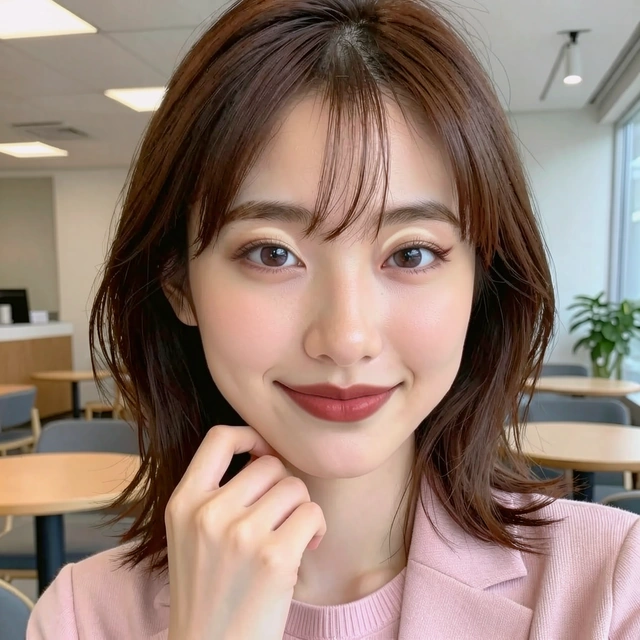

BORROW A DETAIL. MAKE IT YOURS.
Pick. Paint. Remix.
Brush over the makeup you like in a reference.
See exactly that region on your sample portrait.
01 Choose a reference
Four selected looks · prepared Stage II results02 Paint your selection
Paint on the reference to select makeup. The blue overlay marks your selection.
03 Your look
Committed layers
Your layers 0
Your portrait is bare. Paint a reference region, then add it here.
Loading the selected references…
Prepared model results, edited in your browser. Custom selections and mixes do not run a new generation.
We couldn’t load the studio.
A LOOK IS JUST THE BEGINNING
Keep the detail.
Keep the control.
Start with a complete look or brush a small detail from any reference. Add several selections, adjust their strength, and reorder or hide layers to find your balance. Undo takes you back through both selections and layer edits.
The selected examples were rendered offline by IrisMix Stage II. Freehand masks follow a face correspondence map from the reference to the sample portrait; the browser edits those saved results. This is a synthetic sample portrait, not a live photo upload service.
See the full IrisMix workflow ↗